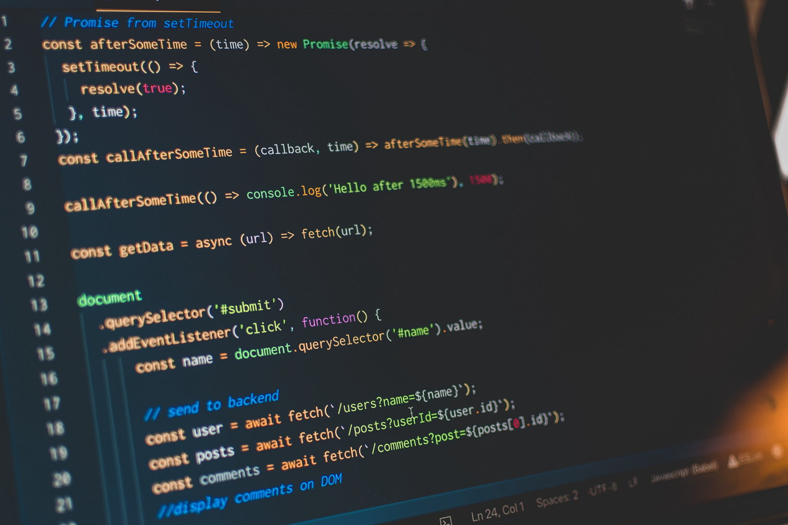
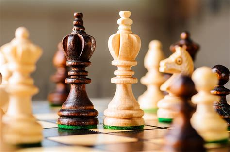

About me
My name is Aronas. I am a 10 year old programmer (yes, its true) who is based on Lithuania and I am a web developer and use the terminal. I believe i am a junior front-end developer and has learned technologies like HTML, CSS, JavaScript, etc.
My dream job was to become a programmer, and i am learning to be one. I say that programming is not only a job, but also fun, with your freedom and imagination to create anything.
What makes me unique?
My approach to web development and design is driven by a balance of creativity, efficiency, and readable code.
I focus on creating designs that are visually appealing and intuitive, aiming for simplicity and minimalism while ensuring they work seamlessly for the user.
I believe that if a design looks great to me, it’s likely to resonate with others as well.
To me, a project isn’t complete until both the aesthetics and functionality align in a way that feels natural.
I sometimes prototype my designs using Figma, but I also find value in sketching ideas out on paper.
This process allows me to quickly experiment with layout, structure, and flow before committing to code.
While my design process is flexible and not bound by strict patterns, I aim to find solutions that both look great to me and are intuitive for others to use.
When it comes to coding, I place a strong emphasis on clean, readable code.
I believe that well-written code is just as important as the design itself, as it ensures future maintainability and scalability.
While I sometimes find debugging a challenge, I also enjoy the process—it’s a chance to learn, improve, and solve problems in a way that brings a sense of accomplishment.
In terms of collaboration, I’m always happy to lend a hand or contribute to a project when needed.
While I typically work solo, I’m open to sharing knowledge and helping others whenever the opportunity arises.
The most rewarding part of my work comes when a project is complete, users enjoy interacting with it, and it looks as amazing as I imagined.
There’s a unique satisfaction in seeing the final result and knowing it has made a positive impact.
My Values or Philosophy
At the heart of my work is the joy of creating something great.
I find fulfillment not just in the process, but also in the end result—whether it’s a beautifully designed website or the satisfaction of finally solving a challenging bug.
The thrill of completing a project and achieving my goals is one of the most rewarding aspects of what I do.
Learning is a major part of my philosophy.
I take the time to fully understand each technology I work with before moving on to the next one.
I focus on mastering a technology first, getting really good at it, and only then exploring the next one.
This approach helps me build a strong foundation and ensures that I’m applying my skills to their fullest potential.
Whether it's through watching tutorials, taking courses, or diving deep into documentation, I’m committed to growing my expertise one step at a time.
User experience (UX) is a priority in my work.
I believe that a successful project should always be intuitive and easy to use.
I put a lot of thought into how users interact with what I build, ensuring that every decision I make serves to enhance the user’s experience.
When it comes to balancing deadlines and quality, I aim for perfection or great enough.
I trust my instincts to know when a project is ready to launch.
Once everything is in place and I’m satisfied with the quality, I set it live with confidence, knowing that I’ve done my best.
For me, success is defined by the completion of a project and achieving my goals along the way.
Whether it’s seeing a project come to life or reaching a milestone in my learning journey, success is the feeling of progress and accomplishment.
Personal Interests
Outside of coding, I enjoy a variety of activities that help me relax and stay inspired.
One of my favorite pastimes is playing board games, especially classics like chess and Stratego.
I love the strategy, critical thinking, and friendly competition these games provide.
I’m also an occasional gamer, with Minecraft being a go-to for unwinding and exploring creativity in a virtual world.
Travel is another passion of mine. Last time I ventured outside of family visits, I had the chance to visit Gdańsk, Poland, a city rich in history and culture.
I find that travelling not only helps me recharge but also broadens my perspective and gives me fresh ideas for my work and personal growth.
When it comes to work-life balance, my routine is fairly simple: I wake up, have breakfast, go to school, and dive straight into coding.
After a focused day of work, I make sure to rest and recharge.
I find that this straightforward approach helps me stay productive and energized for the challenges ahead.
One of my future aspirations is to build a search engine called "SearchLite."
It’s a project I hope to bring to life one day as a fun, personal challenge.
While it's still in the idea phase, it’s something that keeps me motivated and excited about the possibilities of what I could create in the future.
Ultimately, my interests outside of coding help me maintain a healthy balance, keep my mind sharp, and inspire me to continue learning and building.
Mission Statement and Goals
My ultimate goal is to become a full-stack developer, mastering both front-end and back-end technologies.
Once I reach that milestone, I’ll have the freedom to dive into any other technologies that excite me, expanding my skillset in whatever direction sparks my interest.
For now, I’m focused on becoming proficient with the languages and tools that will enable me to build powerful, end-to-end solutions for users.
While my dream job has always been to be a programmer, I envision myself working from home and collaborating with clients remotely.
As I am currently under 18, I am unable to accept permanent job offers at the moment.
However, I’m open to collaborating on personal projects or offering my skills for freelance work where possible, with the understanding that I am still in the process of learning and developing my craft.
I’m particularly excited for the bigger technologies that lie ahead—whether it's mastering advanced frameworks, exploring new areas of web development, or diving into emerging tech.
The possibilities are endless, and I’m eager to continue learning and growing.
One of my personal projects I’m working toward is SearchLite—a search engine I hope to create someday.
It’s a passion project that I’m determined to bring to life, and it represents the kind of innovation I aim to pursue in the future.
As I continue to grow as a developer, my focus will always be on learning new technologies and expanding my capabilities.
I’m excited to evolve into a versatile developer, capable of tackling a variety of challenges across different domains.